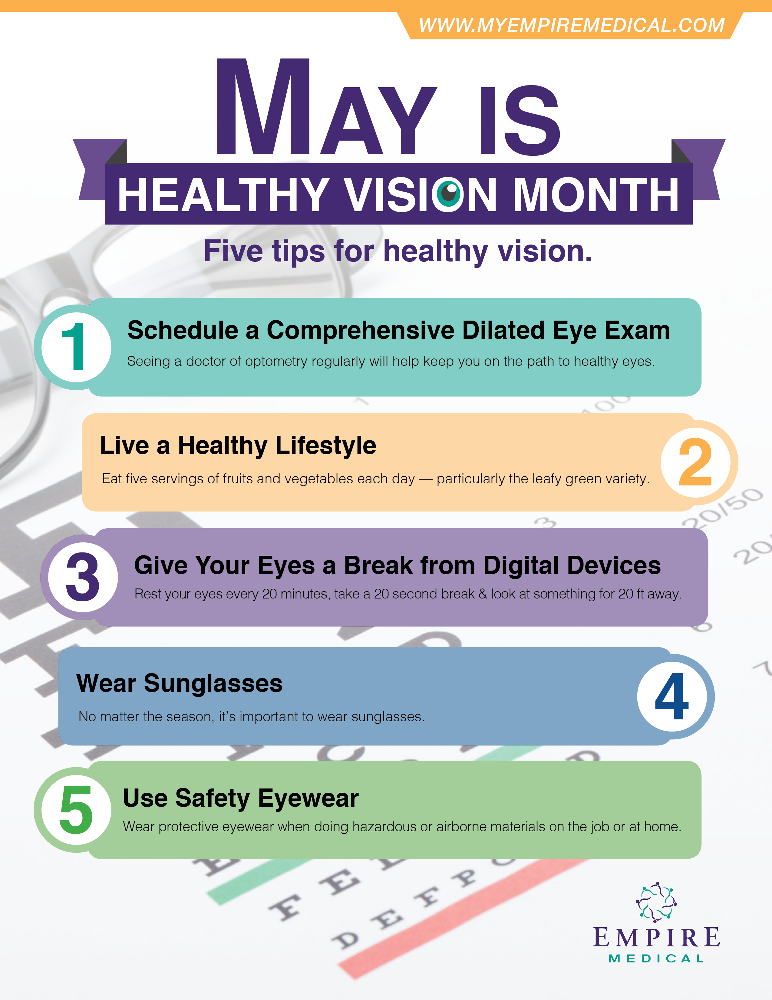

Healthy Vision | National Eye Institute
 Skip to content
COVID-19 is an emerging, rapidly evolving situation.
Get the latest public health information from CDC Get the latest research information from NIH
Close this notice National Eye Institute Menu Learn About Eye Health Healthy Vision Eye Conditions and Diseases NEI for Kids En español Resources for Health Educators Grants and Training How to Apply Funding Opportunities Training at NEI Funding for Training and Career Development Policies and Procedures Resources for Researchers Contact Grants and Funding Staff Research at NEI Clinical Trials Research Labs and Branches Jobs and Training Opportunities at NEI About NEI Strategic Planning News and Events Goals and Accomplishments NEI History NEI Leadership Budget and Congress Advisory Committees Donate to NEI Home Learn About Eye Health Healthy VisionHealthy Vision
If your eyes feel healthy, it's easy to assume they are healthy. But many eye diseases don't have any warning signs — so you could have an eye problem and not know it. The good news is, there's a lot you can do to set yourself up for a lifetime of seeing well!
Keep your eyes healthy
There are lots of ways to keep your eyes healthy — from wearing your sunglasses to eating eye-healthy foods, like salmon and kale.
See more eye health tipsWhat s in your eye? Take a look around!
Explore this graphic to find out how your eyes work!Learn all about eye health with NEI’s 2020 campaign
It’s 2020 — the perfect year to focus on healthy vision! To celebrate, we’re putting eye health in the national spotlight with our More Than Meets the Eye 2020 campaign. Join us!
Learn about NEI’s 2020 campaignGet a dilated eye exam
Getting a dilated eye exam is simple and painless — and it's the single best way to stay on top of your eye health! Find out why they're important, how to prepare, and what to expect.
Get the facts about dilated eye examsFind an eye care professional
Learn about the different kinds of eye care professionals (optometrists, ophthalmologists, and opticians), and get tips on how to find one near you.
Learn more about eye doctorsGet help paying for eye care
Different programs and organizations can help pay for eye exams, glasses, and operations.
Find out about financial aid options Last updated: July 27, 2020 National Eye Institute Facebook Twitter LinkedIn YouTube